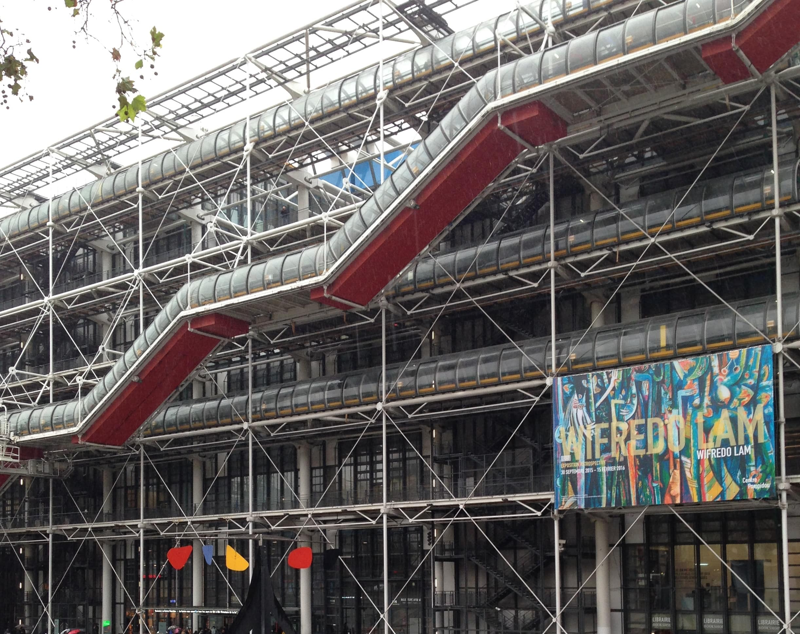
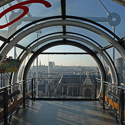
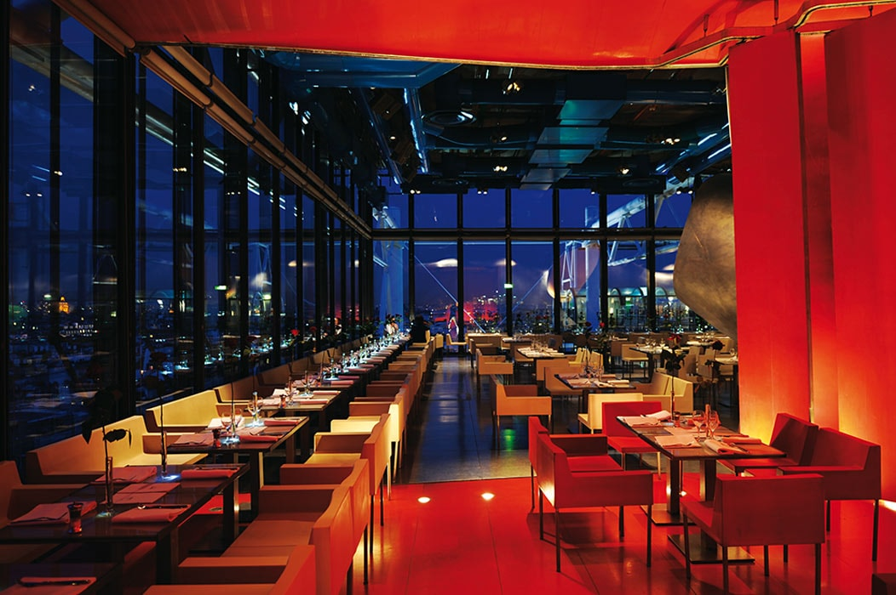
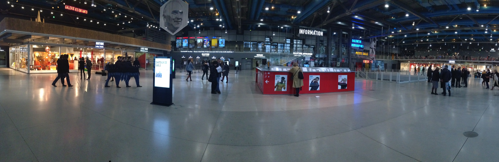

L'architecture

Au plein cœur de Paris
Musée, galeries d’expositions, salles de cinéma, de spectacles, bibliothèques... Vous trouverez tout cela dans un seul et même endroit, au centre George Pompidou. Il est ouvert tous les jours, sauf le mardi et le 1er mai, de 11 h à 22 h (21 h pour le musée et les expositions).
Comment s’y rendre, c’est très simple
Prendre le RER A, B ou D jusqu’à la gare de Châtelet–Les-Halles, ou le métro. Vous pouvez également accéder au Centre Pompidou, par les lignes M11 station Rambuteau, M1 station Hôtel de Ville, M1, M4, M7, M11 ou M14 puis marché 5 minutes station Châtelet-Les-Halles. Depuis la gare de Châtelet – Les Halles, le Centre Pompidou est à 8 minutes à pied par les rues Pierre-Lescot et Rambuteau. Situé au cœur de Paris dans le 4ème arrondissement, entre le quartier du Marais décorés de boutiques de toutes sortes et le quartier des Halles où se trouve un centre commercial.
La place du centre Pompidou est appelé le plateau de Beaubourg. Il a fallu beaucoup d’années de travail et de dur labeur pour pouvoir obtenir un établissement de si grande envergure.
Je vais donc vous expliquer l’architecture de ce centre.
Ne paniquez pas, je ne vais pas vous raconter comment le centre a été construit, mais seulement vous informer de détails qui vont vous donner (ou pas) l’envie d’y aller.
Le centre George Pompidou mesure environ 50 mètres de haut.
Donc ne vous en faites pas, impossible de ne pas le voir.
Vous pouvez penser au premier abord que cet énergumène est toujours en construction.
Mais rassurez-vous, ce n’est pas le cas !
Travaux
La construction du Centre Beaubourg commence en 1972. Les travaux durent cinq années. Il y aura en tout 6 étages.
La Piazza
Quand vous arrivez en face du centre, vous allez remarquer que le sol est un peu incliné, cela va vous permettre d’entrer tout en douceur dans le bâtiment. Cette place s’appelle la Piazza.
Depuis le haut de la Piazza, on peut voir toute la façade principale sans forcément se faire un torticolis. Vous n’aurez pratiquement pas besoin de lever les yeux ! Sur cette place, vous trouverez aucun porche, aucun escalier, aucune marche. Rien !
Vous aurez une vue très dégagée, où vous pourrez vous asseoir, vous retrouver. Vous pourrez aussi apercevoir comme une sorte de chenille qui est collé au parvis du centre.
La chenille
De l’extérieur, on peut aussi apercevoir une sorte de chenille. Je vais vous expliquer plus tard à quoi elle sert.

La hauteur du centre
C’est aussi la hauteur qui rend le Centre Pompidou l’un des hauts lieux parisiens : à son dernier étage, vous pourrez voir la merveilleuse ville de Paris. On peut reconnaître le monument à plusieurs mètres de loin.
Les tuyaux
A l’extérieur, des tuyaux de couleurs différents, des câbles et des poutres sont entièrement visibles.
Ne vous inquiétez pas, ce n’est pas une erreur de construction mais tout ceci à un sens.
Pour faire fonctionner le bâtiment, il faut lui apporter de l'air.
Les tuyaux d'air sont de couleur blanche et bleue. Ils se trouvent sur tous les plafonds à chaque étage et permette de chauffer et climatiser les espaces, selon les saisons. Vous n’aurez donc n’y trop chaud, n’y trop froid ! Vous pourrez les voir à l’extérieur comme à l’intérieur.
L’eau
L'eau est aussi indispensable dans un bâtiment. Elle sert à la climatisation et aussi aux risques d’incendie.
Les tuyaux d'eau sont identifiés par la couleur verte. Eux aussi sont à l'extérieur où ils côtoient les tuyaux bleus. Lorsqu’ils passent dans le bâtiment, ils sont au plafond et restent apparents.
La couleur attribuée aux circulations est le rouge
Reste enfin l'essentiel, ce qui va amener la vie dans la construction : la circulation. C'est-à-dire les escaliers mécaniques et les ascenseurs qui vont permettre au public d'accéder aux différents espaces…
Toutes ces circulations sont rejetées à l'extérieur du bâtiment. Dans la perspective de laisser, à l'intérieur, des plateaux complètement libres.
Puis, plus à l'extérieur encore, est suspendue la « chenille », ce grand escalier mécanique qui dessert les étages et parcourt toute la façade en diagonale. On peut aussi voir que la chenille est de couleur rouge. Rouge comme le sang qui circule dans l’organisme et qui apporte la vie.
Les étages
Passons maintenant à l’intérieur. Vous n’allez pas tarder à vous rendre compte que les « murs » sont faits de panneaux vitrés qui vont vous permettre de voir l’extérieur.
Dans le musée et les expositions, il y a toujours un endroit où, au détour d’une salle, vous serez projetez dans la ville. De la même manière, de l’extérieur, l’intérieur des espaces est visible. Pour les claustrophobes, je suppose que c’est une bonne nouvelle…
- Le niveau -1 est accessible par des ascenseurs et des escaliers, regroupe des espaces d’expositions. Une billetterie des spectacles, mais également l’entré des salles de spectacles, de cinéma, de débats et de conférences.
- Le niveau 0 est l’accueil. Il possède des activités pédagogiques : la galerie des enfants qui est un grand espace vitré où sont organisés des expositions et de nombreux ateliers d’expression pour les plus jeunes. Vos enfants ou vos petits frères et sœurs vont pouvoir s’éclater… Mais aussi, une librairie, des caisses, des boutiques, des vestiaires ainsi que les axes de circulation pour l’ensemble du bâtiment.
- Le niveau 1 est constitué de mezzanines, accessible par des escaliers mécaniques ou les ascenseurs. Vous aurez sur votre gauche une boutique d’objets. Sur la droite des galeries d’expositions ainsi qu’un Café « le mezzanine » et un cinéma. Concernant le Café, ne vous étonnez pas s’il n’y a pas de carte. C’est tout simplement parce que c’est un café extrêmement classe.
- Le niveau 2 possède une salle de presse, une cafétéria ou vous pourrez manger paisiblement votre nourriture (par contre il n’y a pas de chaise… donc il faudra se contenter de manger debout sur des tables hautes).
- Le niveau 3 est un espace consacré au son et à la vidéo, vous pourrez trouver aussi la bibliothèque Kandinsky.
- Au niveau 4, il y a le Musée national d’art moderne qui expose plusieurs centaines d’œuvres. Un espace qui est consacrés aux nouveaux médias et au film. Il y a aussi une boutique, ainsi qu’une librairie.
- Au niveau 5, le musée du 4ème étage continue et vous pourrez prendre l’air et vous reposer en allant directement sur les 3 terrasses qui se trouvent au nord, au sud et à l’ouest.

- Enfin au niveau 6, se trouvent les Galeries 1 et 2, où sont organisées de grandes monographies d’artistes ou des expositions. Il y a également une librairie. Le jeudi, le niveau 6 est ouvert jusqu’à 23 h. Mais aussi vous pourrez reprendre des forces et vous régaler au restaurant « Le George ». Qui est un lieu unique en son genre. Le restaurant possède une très grande terrasse. C’est un lieu idéal pour passer un moment inoubliable sous le ciel parisien et admirer le coucher du soleil.

- Au sommet de la chenille, au 6e niveau, vous allez vous retrouvez sur une plate-forme vitrée, le belvédère, qui semble suspendue dans le vide : tout Paris est devant, sortez vos appareils photos. Dans ces lieux, tous les tuyaux, câbles et poutres qui courent au plafond sont visibles. Sauf dans les niveaux ou ont présentes des œuvres, par respect pour elles, tous les tuyaux et les câbles sont peints en blanc.
En empruntant les escaliers mécaniques situés à gauche de tous les niveaux, vous pourrez accéder à la « chenille », ce grand escalier mécanique suspendu que vous avez vu à l’extérieur du bâtiment, qui dessert les différents niveaux accessibles au public Cette « Chenille » vous permettra de vous élever tout en douceur. Elle est accessible à partir du niveau 1 jusqu’au 6ème.
Présenter les œuvres
Pour présenter les collections, le choix a été fait d’accrocher une sélection afin de laisser respirer le plus possible les œuvres (et le public !). En contrepartie, l’accrochage est renouvelé régulièrement pour exposer de nouvelles œuvres à chaque fois. Lors de ces accrochages, c’est souvent toute l’organisation des espaces qui change : les cloisons sont déplacées, les salles disposées de façon différente, certaines pouvant être fermées par un plafond, lui aussi provisoire. L’architecture des grands plateaux permet ainsi une complète modularité des espaces et leur adaptation aux œuvres présentées (tableaux, mais aussi sculptures, photographies, films, installations, etc.).
Le Centre Pompidou est plus qu’un bâtiment. Il rayonne, et la vie qu’abrite son architecture s’exprime aussi grâce à des expositions « hors les murs » présentées dans toute la France, et dans le monde.
Voilà, j’espère que m’a description du Centre Beaubourg vous aura plût et que vous ferrez bientôt partie des 6 millions de visiteurs qui le fréquentent chaque année.
Bonne visite !
